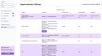
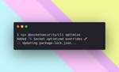
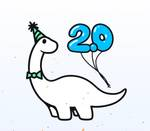

Socket
フィード
Introducing License Enforcement in Socket
Socket
Ensure open-source compliance with Socket’s License Enforcement Beta. Set up your License Policy and secure your software!
11時間前

Enhancing Open-Source Compliance: Introducing Socket’s Advanced License Analysis
Socket
We're launching a new set of license analysis and compliance features for analyzing, managing, and complying with licenses across a range of supported languages and ecosystems.
14時間前

Introducing Socket Optimize
Socket
We're excited to introduce Socket Optimize, a powerful CLI command to secure open source dependencies with tested, optimized package overrides.
2日前
Introducing Java Support in Socket
Socket
We're excited to announce that Socket now supports the Java programming language.
2日前
Typosquatting on PyPI: Malicious Package Mimics Popular 'browser-cookie3' Library to Steal Sensitive Data
Socket
Socket detected a malicious Python package impersonating a popular browser cookie library to steal passwords, screenshots, webcam images, and Discord tokens.
6日前

Deno 2 Improves Compatibility with Node.js and npm, Expands Package Management Features 1
1
Socket
Deno 2.0 is now available with enhanced package management, full Node.js and npm compatibility, improved performance, and support for major JavaScript frameworks.
7日前
Internet Archive Hacked, 31 Million Record Compromised
Socket
The Internet Archive's "Wayback Machine" has been hacked and defaced, with 31 millions records compromised.
8日前
TC39 Advances 10+ ECMAScript Proposals: Key Features to Watch 2
Socket
TC39 is meeting in Tokyo this week and they have approved nearly a dozen proposals to advance to the next stages.
8日前
Nightmares on npm: How Two Malicious Packages Facilitate Data Theft and Destruction
Socket
Our threat research team breaks down two malicious npm packages designed to exploit developer trust, steal your data, and destroy data on your machine.
8日前
White House Cybersecurity Advisor Calls for Ban on Using Insurance Claims for Ransomware Payments
Socket
A senior white house official is urging insurers to stop covering ransomware payments, indicating possible stricter regulations to deter cybercrime.
9日前